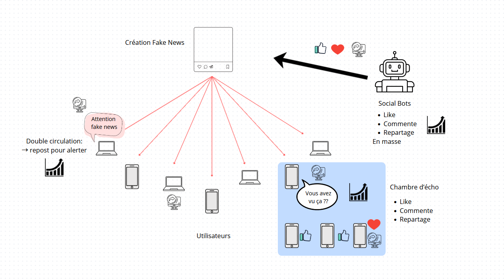

Cette vidéo a plus de 8 ans. Depuis, de nouvelles technologies ont émergé comme par exemple l'IA générative. Les moyens de propagation des informations et les habitudes des utilisateurs ont évolué créant un environnement propice au développement des fake news.
Pour maximiser la viralité de son intox, le créateur peut jouer sur différents leviers comme les émotions, la polarisation ou la conspiration...

Trois principes sont à détailler :
Le saviez-vous ? Selon l'IMT, les fake news se porpagent en moyenne 6 fois plus vite que les vraies infos.
Pour mieux comprendre : mettez vous à la place d'un créateur de fake news avec le jeu informatif Bad News
Vous trouverez une série de 4 images à chaque fois, répondez vrai si vous pensez que l'image a été générée par IA.
Je ne sais pas à quel point vous avez réussi à démêler le vrai du faux mais personnellement les images générées par IA du mariage de Zendaya et Tom Holland m'ont particulièrement bluffée.
TIPS : quelques clés pour déterminer si une photo a été générée par IA
Selon une étude de 2025 se basant sur ce test, les gens ont en moyenne 62% de bonne réponse sur la détection d'image générée par IA.